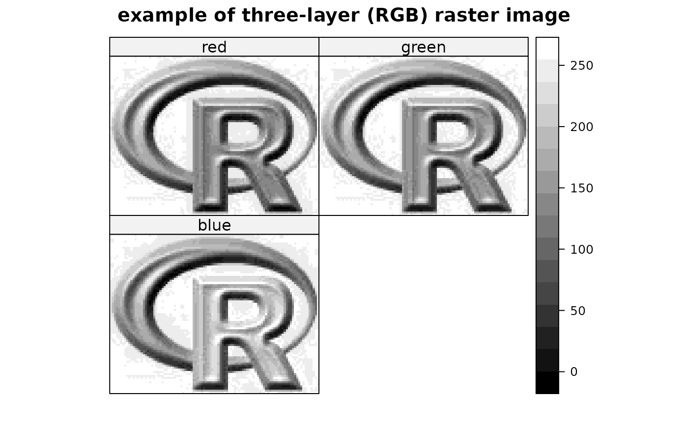

Rlogo.RdRlogo jpeg image data as imported by getRasterData in the rgdal package
data(Rlogo)The format is: int [1:101, 1:77, 1:3] 255 255 255 255 255 255 255 255 255 255 ...
data(Rlogo)
d = dim(Rlogo)
cellsize = abs(c(gt[2],gt[6]))
cells.dim = c(d[1], d[2]) # c(d[2],d[1])
cellcentre.offset = c(x = gt[1] + 0.5 * cellsize[1], y = gt[4] - (d[2] - 0.5) * abs(cellsize[2]))
grid = GridTopology(cellcentre.offset, cellsize, cells.dim)
df = as.vector(Rlogo[,,1])
for (band in 2:d[3]) df = cbind(df, as.vector(Rlogo[,,band]))
df = as.data.frame(df)
names(df) = paste("band", 1:d[3], sep="")
Rlogo <- SpatialGridDataFrame(grid = grid, data = df)
summary(Rlogo)
#> Object of class SpatialGridDataFrame
#> Coordinates:
#> min max
#> x 0 101
#> y -77 0
#> Is projected: NA
#> proj4string : [NA]
#> Grid attributes:
#> cellcentre.offset cellsize cells.dim
#> x 0.5 1 101
#> y -76.5 1 77
#> Data attributes:
#> band1 band2 band3
#> Min. : 0.0 Min. : 0.0 Min. : 0.0
#> 1st Qu.:131.0 1st Qu.:138.0 1st Qu.:151.0
#> Median :196.0 Median :199.0 Median :215.0
#> Mean :182.3 Mean :185.4 Mean :192.8
#> 3rd Qu.:254.0 3rd Qu.:255.0 3rd Qu.:254.0
#> Max. :255.0 Max. :255.0 Max. :255.0
spplot(Rlogo, zcol=1:3, names.attr=c("red","green","blue"),
col.regions=grey(0:100/100),
main="example of three-layer (RGB) raster image", as.table=TRUE)
